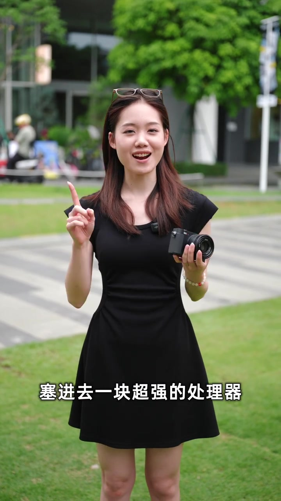
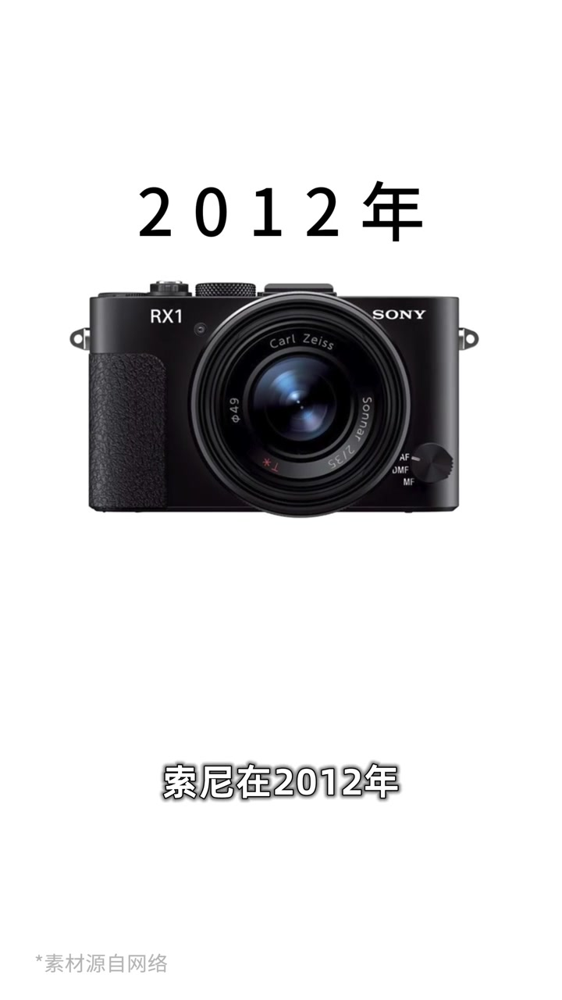
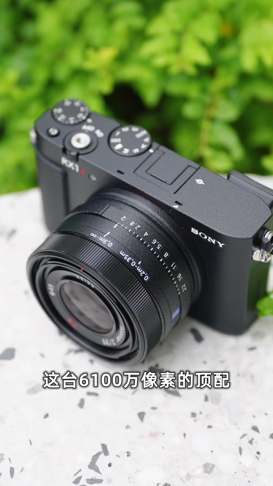
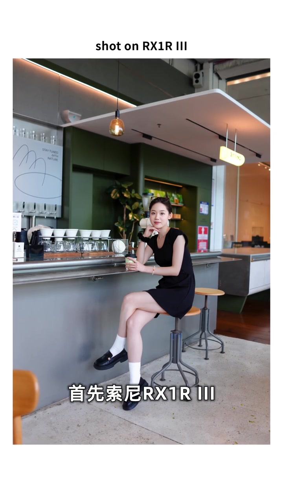
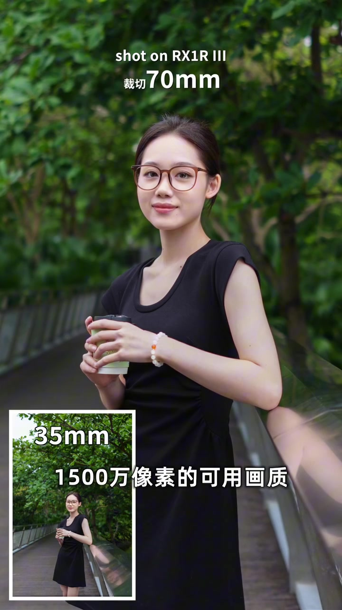
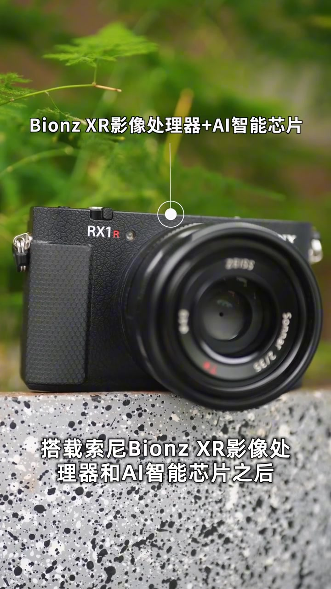
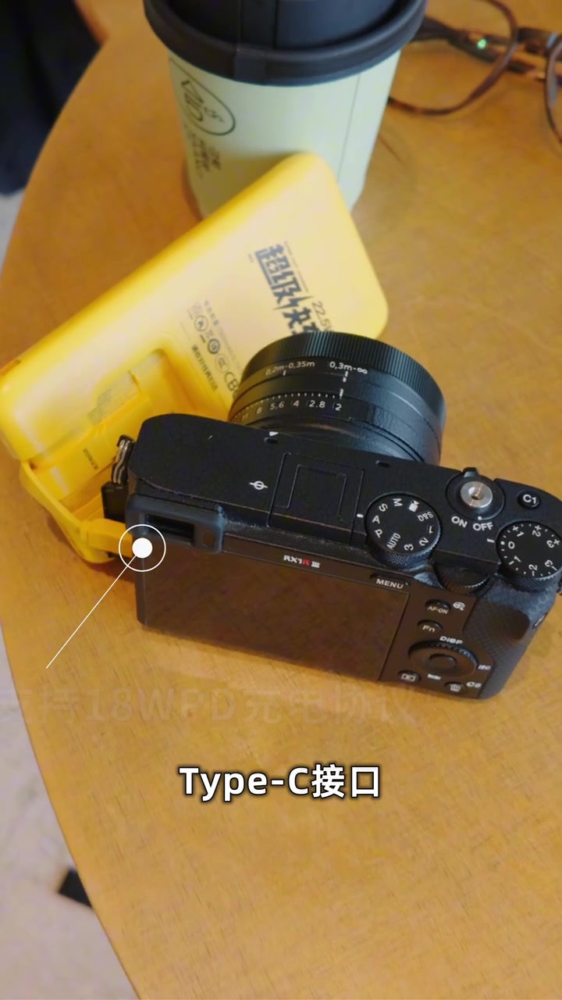
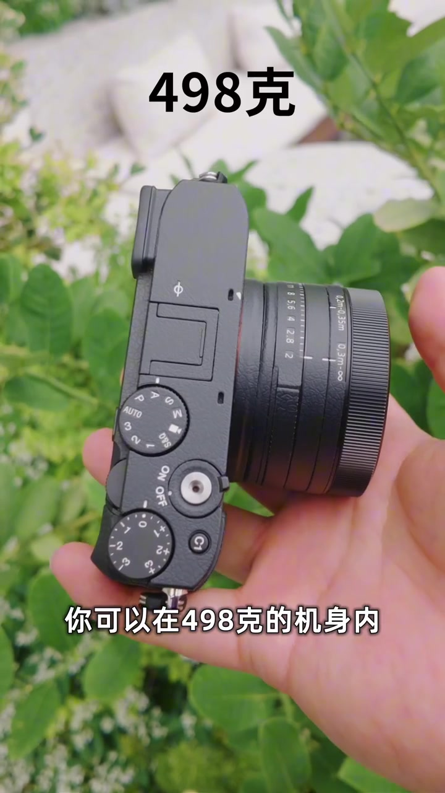

开场：把相机做小，是索尼一生的执念
画面里，讲述者站在草坪上，一手举着黑色口袋机，字幕先砸出「塞进去一块超强的处理器」。她把索尼的气质说得很直白：在「把相机做小」这件事上，索尼几乎视之为执念。今天请来的「嘉宾」，就是索尼 RX1R III——让观众看看这台小钢炮到底怎样。
画面字幕：「塞进去一块超强的处理器」
说明：Whisper 将「RX1R III／视它／御成／全画幅／焦段／喂不饱／魔改／裁切／低通滤镜／BIONZ／AI／S-Log2／徕卡 Q3／蔡司定焦／移植到位／NP-BX1／理光 GR／循规蹈矩」等误识为「RX-E R3／使它／郁成军／全画布／胶段／未不保／磨改／裁迁／低通预镜／Bionzi／AR／斯R2／莱卡KR3／菜丝定热／移不到位／BX-E／李光GR／寻规道具」。下文叙述以可见字幕与机身文字为准；末尾转录仍完整保留原始分段。账号话题标签为「御成索尼」。

从 2012 年 RX1，到「有生之年」等到第三代
叙事切到产品史：2012 年索尼发布第一代大黑卡 RX1，系列颇受好评；次年迅速追加高像素版 RX1R。讲述者提到自己也曾长期把它当作随身机。本以为会像富士 X100 那样正常迭代，结果一等就是十多年——「有生之年系列」终于被数到第三代。
画面字幕侧重点：「索尼在2012年」＋ RX1 产品图
她抛出今天的任务：这台 6100 万像素、顶配、不可更换镜头的相机，有哪些有趣卖点？接下来由她帮大家上手测试。

极端形态：巴掌大机身焊死卡口
进入机身定位。她说 RX1R III「本身就是一个非常极端的产品」：在大巴掌大小的机身里，塞进与索尼画质旗舰 A7R V 同款、目前顶流的 6100 万像素背照式 CMOS，却焊死了卡口；再搭配一颗固定不可拆的蔡司定制全画幅 35mm f/2。体积与性能被推到极限，才让这款「看似不可能」的产品出现。

结论一：35mm 段位上的全画幅顶配画质
拍摄后她先给三个结论。第一：RX1R III 在 35mm 焦段上，拥有目前最顶级的全画幅画质——甚至有用户觉得蔡司这颗 35mm f/2「喂不饱」传感器。样片叠字「shot on RX1R III」，咖啡馆场景里的人像直出锐度很高。
画面字幕：「首先索尼RX1R III」＋「shot on RX1R III」
传感器侧，她点名索尼半导体「魔改版」IMX455：去除低通滤镜版本，并增加 AR 抗反射涂层，因此画面锐度与解析力会格外惊人。

6100 万像素裁切到 70mm，仍有约 1500 万可用
她提醒别把 RX1R III 想成「死死钉死在一个焦段」：机身裁切到等效 70mm 时，仍可保留约 1500 万像素可用画质。若只做日常社交媒体分享，这台机几乎能当「35–70mm」实力机用。画面用主图 70mm 裁切＋左下 35mm 全景小窗对照，把数字裁切的可用性讲得很直观。
画面字幕：「裁切 70mm」「1500万像素的可用画质」

结论二：随身机里的顶配性能与视频规格
第二结论落到性能。她认为 RX1R 系列同样拥有索尼高端机身中顶配的性能：搭载 BIONZ XR 影像处理器与 AI 智能芯片后，整体运行速度、自动对焦、视频规格都属于高端随身相机里的顶流。字幕直接标出「Bionz XR影像处理器+AI智能芯片」。
画面字幕：「Bionz XR影像处理器+AI智能芯片」
她进一步说：人物主体自动对焦算法，以及 4K30 帧 10-bit S-Log2 一类视频录制规格，在不可更换镜头相机里也属顶流；和徕卡 Q3 比毫不逊色，甚至在对焦与机身设定上更有优势——这是明确的个人立场对比。

结论三：特化细节到位，续航仍是短板
第三结论：这台相机更像索尼在坚持全画幅规格下，拿出来的最好特化产品。蔡司定焦镜头增加了微距焦段；支持 UHS-II 高速卡槽；Type-C 支持 18W PD 充电；索尼最新创意外观色彩也移植到位；电池从十年前的 NP-BX1 升级到 NP-FW50。
画面俯拍机身侧面 Type-C，旁边放着充电宝，字幕写「Type-C接口」「支持18W PD充电协议」。但她也坦言：极端高画质模式下，和理光 GR、徕卡 Q 系列类似，续航还是有点顶不住——出门三块电池才安心。

收尾：鲜明取舍，不是循规蹈矩的泛泛之辈
她借官网分类收束：索尼并未把 RX1R III 放进自家微单产品线——它更像给「取舍非常鲜明、需求非常清楚」的用户定制。你可以在 498 克机身内，拥有「这个星球上目前最顶级的画质」，也必须接受不可更换镜头的现实。收尾金句：选择它的，都不是循规蹈矩的泛泛之辈。
画面字幕：「你可以在498克的机身内」
